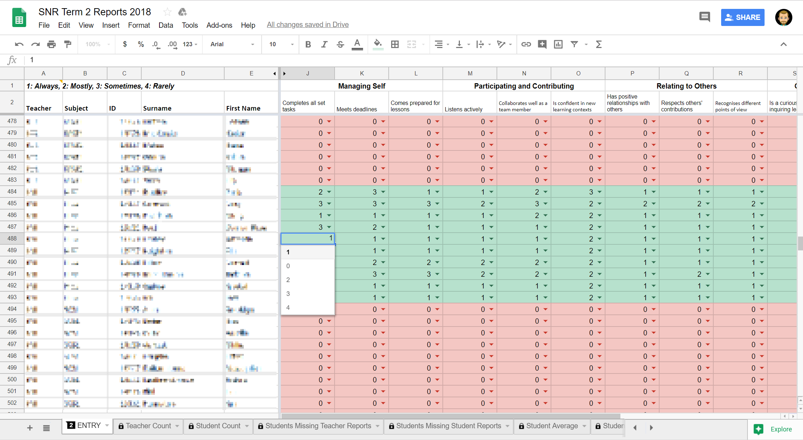
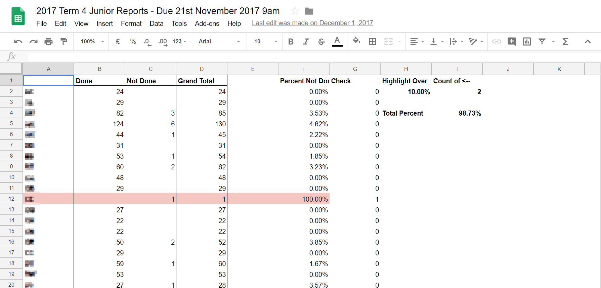
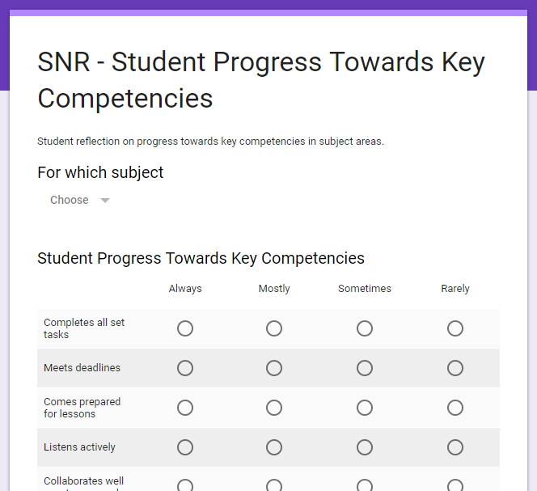
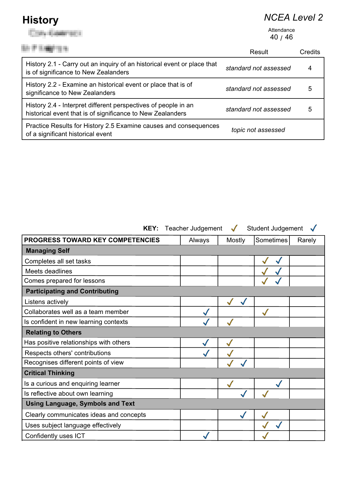
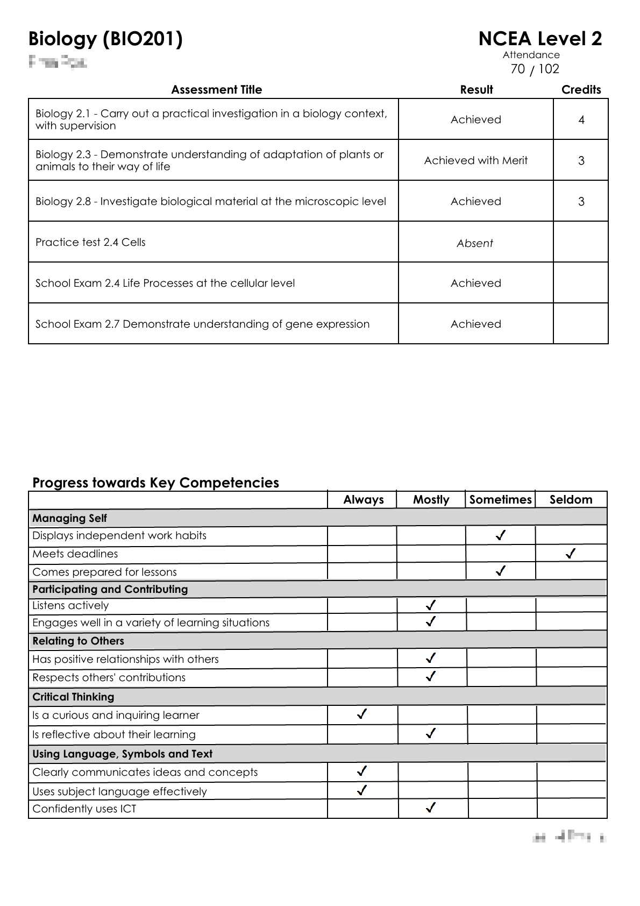

Making it easy to add teacher and student voice onto KAMAR reports using google docs.
If you want to talk to me about reports contact me.
For other things I do see here.
Teachers enter in the key competencies for students in a google doc:

This makes it really easy to see who has and hasn't done their reports:

Optionally students can contribute their voice to the report as well using a google form:

This is all then imported back into KAMAR so you can produce the reports using all the attendance and achievement data in there and have pages that look like these:
 
If you want to get in touch email me or give me a call on 021-061-5390
For other things I do see here.